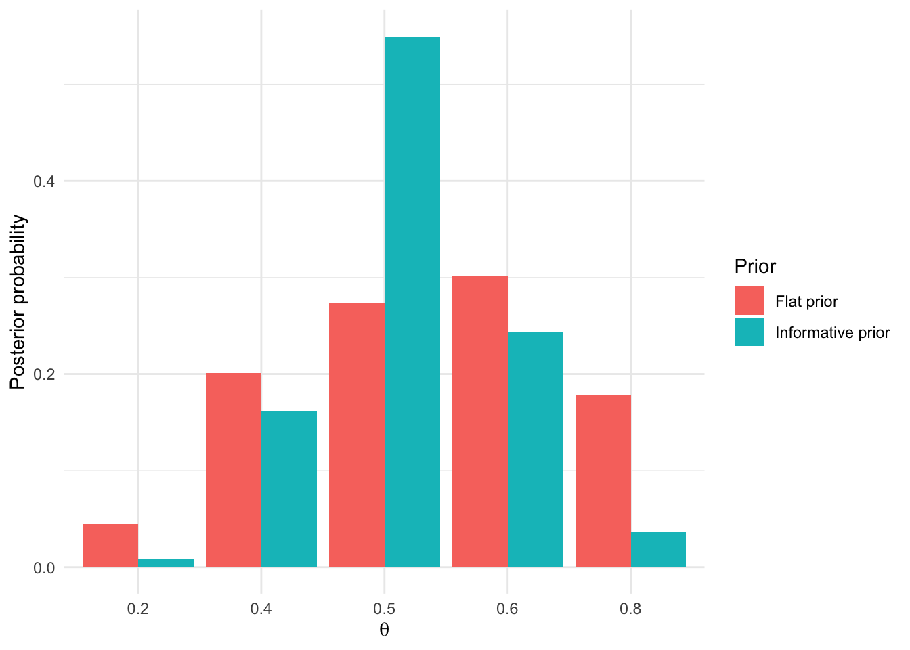
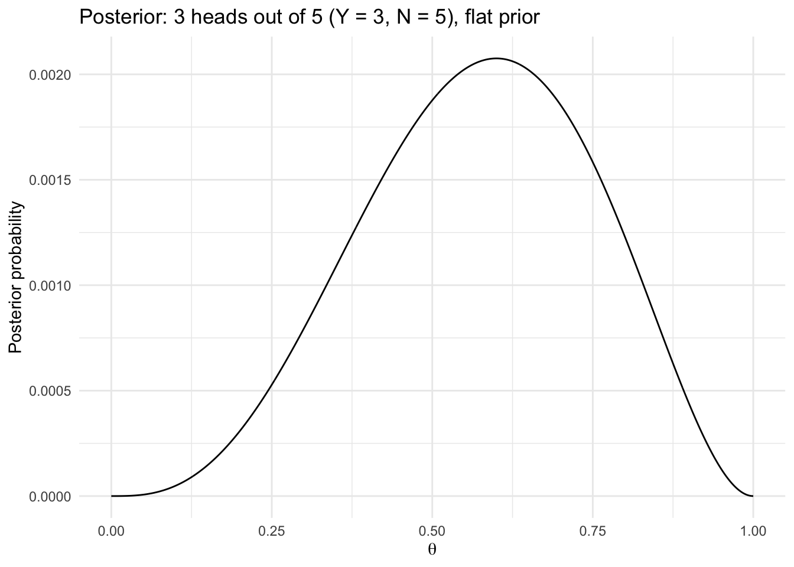
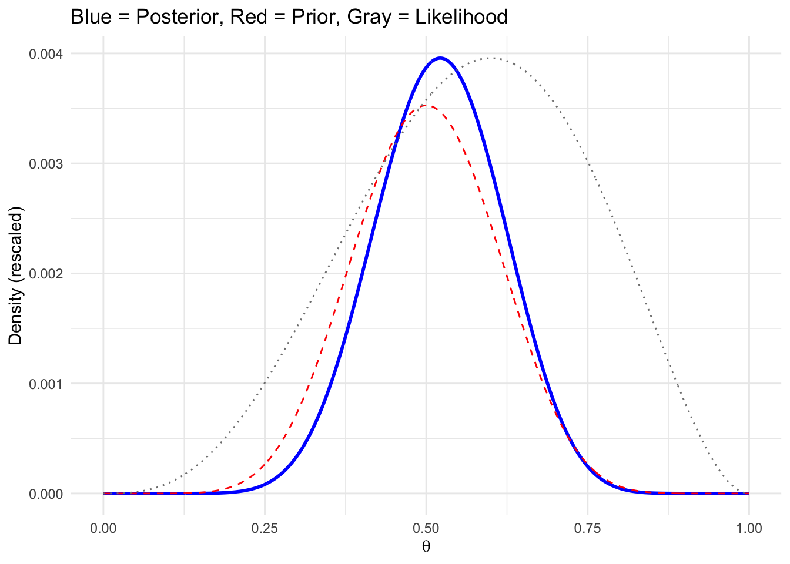
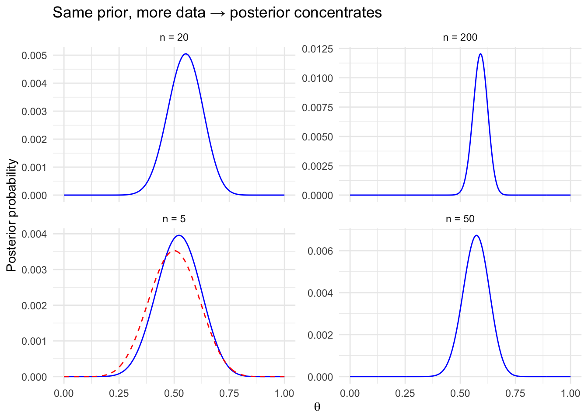
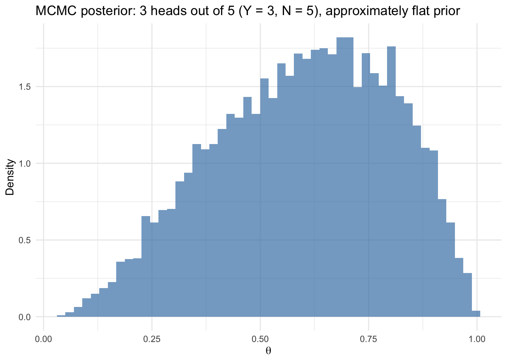
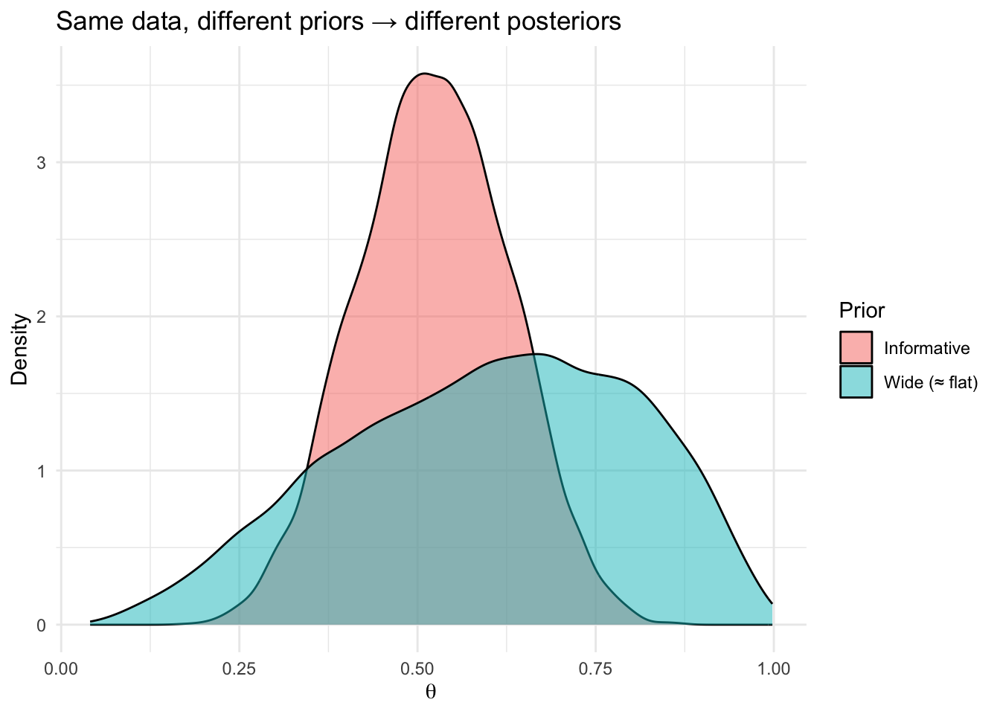

Code
library(tidyverse)
library(brms)
library(tidybayes)
library(ggdist)
library(glue)Consider the following setting: A factory produces coins, each with a different bias \(\theta_i\). You don’t know which coin you received. You have prior beliefs about which coins the factory is likely to produce — \(p(\theta_i)\). You flip the coin \(N\) times, observe \(Y\) heads, and use that data to figure out which coin you probably got — \(p(\theta_i \mid \text{data})\).
In Monday’s lecture, you saw a setting like this play out with a table of probabilities:
each row was a different coin (a different \(\theta_i\)), showing what it could produce — \(p(\text{data} \mid \theta_i)\) — with one column for each possible outcome (0 heads, 1 head, … \(N\) heads)
you then observed \(Y\) heads out of \(N\) tosses
you fixed the data (the \(\text{data} = Y\) column) and scored each coin on how well it explained your observation — that’s the likelihood, \(p(\text{data} = Y \mid \theta_i)\)
then you multiplied each cell of this column by your prior on \(\theta_i\), and divided by the column sum:
\[\frac{p(\text{data} = Y \mid \theta_i) \times p(\theta_i)}{\sum_i p(\text{data} = Y \mid \theta_i) \times p(\theta_i)}\]
In this lab, you’ll do all of this in R — first by hand, then with brms. The entire lab uses coins. But you’ll be using three different methods to obtain your posterior — a table, grid approximation, and MCMC.
A note on how to work through this lab: Throughout this lab, you’ll find that some code is commented out, and some is left for you to write yourself. You can uncomment the commented code to run it (CMD + Shift + C on selected lines). But before doing so, take a moment to think about how you’d write this yourself. What functions would you use? What inputs are needed, etc? Then uncomment the code, and make sure you understand each line / contrast with your approach before moving on. For the blanks marked # Your code here: that’s your turn — write the code, run it, and check that the output makes sense before continuing. Also, make sure to answer the descriptive follow-up questions such as “what does these tell you?”
library(tidyverse)
library(brms)
library(tidybayes)
library(ggdist)
library(glue)In lecture, we built a table with 5 coins (\(\theta_i\) = 0.2, 0.4, 0.5, 0.6, 0.8) and \(N = 5\) flips, giving 6 possible outcomes (0 through 5 heads). Let’s recreate it, and then observe \(Y = 3\) heads.
Use dbinom() to compute the probability of each outcome for each coin. (This is reading across a row — \(p(\text{data} \mid \theta_i)\) with \(\theta_i\) fixed.)
## Define our coins
theta_values <- c(0.2, 0.4, 0.5, 0.6, 0.8)
## For each theta_i, compute the probability of 0, 1, 2, 3, 4, 5 heads
prob_table <- tibble(theta = theta_values) %>%
rowwise() %>%
mutate(
probs = list(dbinom(0:5, size = 5, prob = theta))
) %>%
unnest_wider(probs, names_sep = "_") %>%
rename_with(~ paste0("heads_", 0:5), starts_with("probs_"))
prob_table# A tibble: 5 × 7
theta heads_0 heads_1 heads_2 heads_3 heads_4 heads_5
<dbl> <dbl> <dbl> <dbl> <dbl> <dbl> <dbl>
1 0.2 0.328 0.410 0.205 0.0512 0.00640 0.00032
2 0.4 0.0778 0.259 0.346 0.230 0.0768 0.0102
3 0.5 0.0312 0.156 0.312 0.312 0.156 0.0312
4 0.6 0.0102 0.0768 0.230 0.346 0.259 0.0778
5 0.8 0.000320 0.0064 0.0512 0.205 0.410 0.328 Verify that each row sums to 1. What does this tell you?
# Your code here: using a similar structure as above, compute row sums, mutate it (and excluding the theta column)
prob_sums <- prob_table %>%
group_by(theta) %>%
mutate(sum = heads_0 + heads_1 + heads_2 + heads_3 + heads_4 + heads_5)Answer: this tells us that the different heads probabilities are a proper probability distribution.
Now fix the data at 3 heads (Y = 3) and read down the column. This gives you the likelihood function for Y = 3 — \(p(\text{data} = 3 \mid \theta_i)\) — which scores each coin on how well it explains your observation.
Hint: you used dbinom() in Section 1 across outcomes — now use it across \(\theta_i\) values, fixing the number of heads at 3.
## Score each coin on how well they explain 3 heads out of 5 (Y = 3, N = 5)
likelihood_table <- tibble(
theta = theta_values,
likelihood = dbinom(3, size = 5, prob = theta_values)
)
likelihood_table# A tibble: 5 × 2
theta likelihood
<dbl> <dbl>
1 0.2 0.0512
2 0.4 0.230
3 0.5 0.312
4 0.6 0.346
5 0.8 0.205 Does the likelihood column sum to 1? Compute it. What does this tell you about the likelihood?
# Your code here
likelihood_sum <- sum(likelihood_table$likelihood)
likelihood_sum[1] 1.1445Answer: No, it does not sum to 1, which means it’s not a probability distribution.
Which \(\theta_i\) has the highest likelihood score? That’s the MLE. Can you call it a probability? Why or why not?
Answer: A theta of 0.6 has the highest likelihood score. You can’t call it a probability, because the likelihoods don’t sum to 1 and therefore aren’t a probability distribution.
Now do what Bayes’ rule does: multiply each likelihood by a prior, then normalize so it sums to 1.
Start with a flat prior — each \(\theta_i\) is equally plausible before seeing data. You have the likelihood_table from Section 2. Add columns for the prior, the product of prior × likelihood, and the normalized posterior.
posterior_table <- likelihood_table %>%
mutate(
prior = 1 / n(), # flat prior: each theta_i gets equal weight
prior_x_likelihood = prior * likelihood, # numerator of Bayes' rule
posterior = prior_x_likelihood / sum(prior_x_likelihood) # normalize
)
posterior_table# A tibble: 5 × 5
theta likelihood prior prior_x_likelihood posterior
<dbl> <dbl> <dbl> <dbl> <dbl>
1 0.2 0.0512 0.2 0.0102 0.0447
2 0.4 0.230 0.2 0.0461 0.201
3 0.5 0.312 0.2 0.0625 0.273
4 0.6 0.346 0.2 0.0691 0.302
5 0.8 0.205 0.2 0.0410 0.179 Verify that the posterior column sums to 1. What does this tell you?
# Your code here
posterior_sum <- sum(posterior_table$posterior)
posterior_sum[1] 1Answer: It does sum to 1, which means it can be interpreted as a probability distribution.
In lecture, we asked: “There’s a ___% chance that \(\theta\) is 0.6.” Fill in the blank using your posterior table. Can you also state: “There’s a ___% chance that \(\theta\) is 0.5 or 0.6”?
# Your code here
print(glue("There's a {posterior_table$posterior[4] * 100}% chance that theta is 0.6"))There's a 30.1965923984273% chance that theta is 0.6print(glue("There's a {(posterior_table$posterior[3] + posterior_table$posterior[4]) * 100}% chance that theta is 0.5 or 0.6"))There's a 57.5010921799913% chance that theta is 0.5 or 0.6You just did something that the likelihood alone could not do — you made a probability statement about a parameter.
Now use an informative prior — “most coins are roughly fair.” Assume that the bias probabilities are c(0.05, 0.20, 0.50, 0.20, 0.05)
posterior_informative <- likelihood_table %>%
mutate(
# Prior peaked at 0.5, lower at extremes
prior = c(0.05, 0.20, 0.50, 0.20, 0.05),
prior_x_likelihood = prior * likelihood,
posterior = prior_x_likelihood / sum(prior_x_likelihood)
)
posterior_informative# A tibble: 5 × 5
theta likelihood prior prior_x_likelihood posterior
<dbl> <dbl> <dbl> <dbl> <dbl>
1 0.2 0.0512 0.05 0.00256 0.00901
2 0.4 0.230 0.2 0.0461 0.162
3 0.5 0.312 0.5 0.156 0.550
4 0.6 0.346 0.2 0.0691 0.243
5 0.8 0.205 0.05 0.0102 0.0360 Compare this posterior to the flat-prior posterior. Which \(\theta\) is most probable now? Did the prior pull the estimate? In which direction?
Answer: Now the most probable theta is 0.5 instead of 0.6. The prior pulled the estimate to be more centered/lower.
Plot both posteriors side by side.
# Combine the two posteriors for plotting
bind_rows(
posterior_table %>% mutate(prior_type = "Flat prior"),
posterior_informative %>% mutate(prior_type = "Informative prior")
) %>%
ggplot(aes(x = factor(theta), y = posterior, fill = prior_type)) +
geom_col(position = "dodge") +
labs(x = expression(theta), y = "Posterior probability",
fill = "Prior") +
theme_minimal()
The data are the same (3 heads out of 5). Only the prior changed. Why did the posterior shift? When would this matter more — with 5 flips or 500 flips?
Answer: The posterior shifted because we incorporated a prior belief that weighted the different thetas differently. This matters more for 5 flips than for 500 flips – the prior matters more when you have less empirical data because more data provides more evidence to update the prior.
With only 5 values of \(\theta_i\), we got a rough picture. What if we tried 1,000 values between 0 and 1? That’s grid approximation — the same logic, just with a much finer grid. Now \(\theta\) becomes effectively continuous.
Replace the 5 \(\theta_i\) values with seq(0, 1, length.out = 1000) and repeat the same multiply-and-normalize steps from Section 3. Then plot the posterior.
## Define a fine grid of theta values
grid <- tibble(
theta = seq(0, 1, length.out = 1000)
) %>%
mutate(
prior = 1, # flat prior (unnormalized is fine)
likelihood = dbinom(3, size = 5, prob = theta), # score each theta
unstd_posterior = prior * likelihood, # prior × likelihood
posterior = unstd_posterior / sum(unstd_posterior) # normalize
)
## Plot the posterior
ggplot(grid, aes(x = theta, y = posterior)) +
geom_line() +
labs(x = expression(theta), y = "Posterior probability",
title = "Posterior: 3 heads out of 5 (Y = 3, N = 5), flat prior") +
theme_minimal()
Where is the peak of the posterior? Does this match the MLE from Section 2?
grid %>%
filter(posterior == max(posterior))# A tibble: 1 × 5
theta prior likelihood unstd_posterior posterior
<dbl> <dbl> <dbl> <dbl> <dbl>
1 0.600 1 0.346 0.346 0.00208Answer: The peak of the posterior is at 0.5995996 =~ 0.6, which matches the MLE from Section 2.
Now replace the flat prior with a Beta(10, 10) distribution — peaked near 0.5, skeptical of extreme values.
Note below: The likelihood and posterior are on different scales, so we rescale the likelihood to the same height for visual comparison. It’s just a plotting/visualization trick. The shapes and peaks are what matter here, not the y-axis values.
grid_informative <- tibble(
theta = seq(0, 1, length.out = 1000)
) %>%
mutate(
prior = dbeta(theta, 10, 10), # peaked near 0.5
likelihood = dbinom(3, size = 5, prob = theta),
unstd_posterior = prior * likelihood,
posterior = unstd_posterior / sum(unstd_posterior)
)
## Plot prior, likelihood (rescaled), and posterior together
grid_informative %>%
mutate(
likelihood_scaled = likelihood / max(likelihood) * max(posterior) # rescale for visibility
) %>%
ggplot(aes(x = theta)) +
geom_line(aes(y = posterior), color = "blue", linewidth = 1) +
geom_line(aes(y = prior / sum(prior)), color = "red", linetype = "dashed") +
geom_line(aes(y = likelihood_scaled), color = "gray50", linetype = "dotted") +
labs(x = expression(theta), y = "Density (rescaled)",
title = "Blue = Posterior, Red = Prior, Gray = Likelihood") +
theme_minimal()
The posterior (blue) sits between the prior (red) and the likelihood (gray). Why? What would happen to the posterior if you had \(Y = 300\) heads out of \(N = 500\) instead of \(Y = 3\) out of \(N = 5\)?
Answer: The posterior is between the prior and the likelihood because it is shaped by both. If you had more evidence, the posterior would be a lot more aligned with the likelihood than the prior.
Increase the sample size while keeping the same proportion of heads (60%).
# Same proportion (60% heads), increasing sample sizes
sample_sizes <- c(5, 20, 50, 200)
heads_observed <- round(0.6 * sample_sizes) # Y = 3, 12, 30, 120
grid_by_n <- map2_dfr(sample_sizes, heads_observed, function(n, k) {
tibble(
theta = seq(0, 1, length.out = 1000),
n = n,
prior = dbeta(theta, 10, 10),
likelihood = dbinom(k, size = n, prob = theta),
unstd_posterior = prior * likelihood,
posterior = unstd_posterior / sum(unstd_posterior)
)
})
ggplot(grid_by_n, aes(x = theta, y = posterior)) +
geom_line(color = "blue") +
geom_line(aes(y = prior / sum(prior)), color = "red", linetype = "dashed",
data = grid_by_n %>% filter(n == 5)) +
facet_wrap(~ paste0("n = ", n), scales = "free_y") +
labs(x = expression(theta), y = "Posterior probability",
title = "Same prior, more data → posterior concentrates") +
theme_minimal()
What happens to the posterior as n increases? Does the prior still matter at n = 200? This is what the “Three ingredients” slide was about: “With lots of data — likelihood dominates.”
Answer: As n increases, the posterior becomes more centered on the peak of the likelihood (0.6) and becomes steeper/more peaked. At n = 200, the prior has minimal/no influence on the posterior.
Grid approximation works beautifully for one parameter. But your regression models have \(\beta_0\), \(\beta_1\), and \(\sigma\) — three parameters. A 3D grid with 1000 points per dimension means 1000^3 = 1,000,000,000 (fill in the blank) cells. That’s why we need MCMC. Let’s fit the same coin problem with brms and see that it gives us the same answer.
brms needs data in a data frame. For a binomial model, we tell it how many successes and how many trials.
# Our coin data: Y = 3 heads out of N = 5 flips
coin_data <- data.frame(
heads = 3,
trials = 5
)We’ll use family = binomial and a very wide prior on the intercept (which is on the logit scale). A wide prior on the logit scale approximates a flat prior on the probability scale.
fit_flat <- brm(
heads | trials(trials) ~ 1, # intercept-only binomial model
family = binomial(link = "logit"),
data = coin_data,
prior = prior(normal(0, 10), class = Intercept), # wide prior ≈ flat on prob scale
seed = 504,
iter = 4000, warmup = 1000, chains = 4
)summary(fit_flat) Family: binomial
Links: mu = logit
Formula: heads | trials(trials) ~ 1
Data: coin_data (Number of observations: 1)
Draws: 4 chains, each with iter = 4000; warmup = 1000; thin = 1;
total post-warmup draws = 12000
Regression Coefficients:
Estimate Est.Error l-95% CI u-95% CI Rhat Bulk_ESS Tail_ESS
Intercept 0.49 1.02 -1.43 2.61 1.00 4317 4029
Draws were sampled using sampling(NUTS). For each parameter, Bulk_ESS
and Tail_ESS are effective sample size measures, and Rhat is the potential
scale reduction factor on split chains (at convergence, Rhat = 1).The intercept is on the logit scale. To convert to \(\theta\) (probability scale), apply the inverse logit: plogis(). What’s the posterior mean of \(\theta\)? Is it closer to 0.5 or 0.6? Why?
# Extract posterior draws of the intercept
draws_flat <- as_draws_df(fit_flat) %>%
mutate(theta = plogis(b_Intercept)) # convert logit → probability
# Posterior mean of theta
mean(draws_flat$theta)[1] 0.5981253Answer: The posterior mean of theta is 0.598, which is closer to 0.6. This is because with a flat prior the posterior is essentially the same as the likelihood.
How does this compare to your grid approximation result from Section 5?
Answer: This is pretty similar to the grid approximation result (0.5995996), although slightly less close to 0.6 exactly.
ggplot(draws_flat, aes(x = theta)) +
geom_histogram(aes(y = after_stat(density)), bins = 50,
fill = "steelblue", alpha = 0.7) +
labs(x = expression(theta), y = "Density",
title = "MCMC posterior: 3 heads out of 5 (Y = 3, N = 5), approximately flat prior") +
theme_minimal()
This histogram is made from 12,000 draws (4 chains × 3000 post-warmup). Each draw is a value of \(\theta\) sampled from the posterior. The histogram IS the posterior. Compare the shape to your grid approximation plot from Section 5 — how does the shape compare to your grid approximation plot from Section 5? What’s similar? What’s different?
Answer: The overall shape is very similar, but since this histogram is drawn from simulations it’s a lot less smooth.
Now use a prior that says “most coins are roughly fair.” On the logit scale, \(\theta = 0.5\) corresponds to logit = 0. A Normal(0, 0.5) prior on the logit scale concentrates \(\theta\) near 0.5.
fit_informative <- brm(
heads | trials(trials) ~ 1,
family = binomial(link = "logit"),
data = coin_data,
prior = prior(normal(0, 0.5), class = Intercept), # informative: most coins near fair
seed = 504,
iter = 4000, warmup = 1000, chains = 4
)draws_informative <- as_draws_df(fit_informative) %>%
mutate(theta = plogis(b_Intercept))
mean(draws_informative$theta)[1] 0.5215703The posterior mean shifted compared to the flat prior. In which direction? Why? Does this match what happened in Section 4 when you changed the prior by hand?
Answer: The posterior mean is now lower and closer to 0.5. This is because adding an informative prior that’s weighted more heavily around 0.5 shifts the posterior to be closer to the prior (with maximum probability at 0.5) than the likelihood. This also matches what happened in Section 4.
bind_rows(
draws_flat %>% select(theta) %>% mutate(prior_type = "Wide (≈ flat)"),
draws_informative %>% select(theta) %>% mutate(prior_type = "Informative")
) %>%
ggplot(aes(x = theta, fill = prior_type)) +
geom_density(alpha = 0.5) +
labs(x = expression(theta), y = "Density",
fill = "Prior",
title = "Same data, different priors → different posteriors") +
theme_minimal()Warning: Dropping 'draws_df' class as required metadata was removed.
Warning: Dropping 'draws_df' class as required metadata was removed.
With only 5 flips, the prior matters. What would you expect if you had 500 flips? (You can test this: change the data to heads = 300, trials = 500 and refit both models.)
Answer: I would expect the prior to matter a lot less and that the posterior would look a lot more like the likelihood (highest probability at 0.6).
Using your posterior draws, make the probability statements that MLE cannot. Hint: what fraction of your draws satisfy a given condition? Think about what mean() returns when applied to a logical vector.
# "What's the probability that theta > 0.5?"
mean(draws_flat$theta > 0.5)[1] 0.6805833# "What's the probability that theta is between 0.4 and 0.8?"
mean(draws_flat$theta > 0.4 & draws_flat$theta < 0.8)[1] 0.6275833In lecture, the blank was: “There’s a ___% chance that \(\theta\) is 0.6.” With continuous posterior draws, we can’t ask about a single point. Instead, we ask about intervals. Compute: “There’s a ___% chance that \(\theta\) is between 0.55 and 0.65.” How does this compare to the grid approximation posterior at \(\theta = 0.6\)?
print(glue("There's a {mean(draws_flat$theta > 0.55 & draws_flat$theta < 0.65) * 100}% chance that theta is between 0.55 and 0.65"))There's a 16.9916666666667% chance that theta is between 0.55 and 0.65Answer: The original grid approximation posterior for theta = 0.6 was 30.1966%, so this is lower, which is because the probability mass is more spread out over individual values (as opposed to just 5 theta values in the grid approximation).
The 95% credible interval is the central 95% of the posterior draws. This has the interpretation that frequentist confidence intervals don’t: “There’s a 95% probability that \(\theta\) lies within this interval.”
# 95% credible interval
quantile(draws_flat$theta, probs = c(0.025, 0.975)) 2.5% 97.5%
0.1937958 0.9312402 Is \(\theta = 0.5\) inside the 95% credible interval? What about \(\theta = 0.2\)? What does this tell you?
Answer: Both 0.5 and 0.2 are inside the 95% credible interval, which means that the real value of theta could still plausibly (within 95% of the time) be one of those two values.
You just solved the same problem three ways:
All three gave you the same answer. The first two don’t scale to real models with many parameters. The third does. That’s why we use brms.
In your own words, explain the connection between the posterior table from Section 3 and the histogram from Section 10. What’s the same? What’s different?
Answer: Both show the posterior probability density over different possible theta values when using a flat prior. Both also show peaks in posterior probability around a theta of 0.6. However, the histogram from Section 10 has more dense sampling of possible theta values and shows the approximate posterior probability (from simulation/sampling), while the posterior table from Section 3 shows the exact posterior probabilities for a much smaller set of possible theta values.
Kurz, A. S. (2025). Statistical rethinking with brms, ggplot2, and the tidyverse: Second edition (Version 1.2.0). https://bookdown.org/content/4857/
McElreath, R. (2020). Statistical rethinking: A Bayesian course with examples in R and Stan (Second Edition). CRC Press.
sessionInfo()R version 4.5.1 (2025-06-13)
Platform: aarch64-apple-darwin20
Running under: macOS Tahoe 26.2
Matrix products: default
BLAS: /Library/Frameworks/R.framework/Versions/4.5-arm64/Resources/lib/libRblas.0.dylib
LAPACK: /Library/Frameworks/R.framework/Versions/4.5-arm64/Resources/lib/libRlapack.dylib; LAPACK version 3.12.1
locale:
[1] en_US.UTF-8/en_US.UTF-8/en_US.UTF-8/C/en_US.UTF-8/en_US.UTF-8
time zone: America/New_York
tzcode source: internal
attached base packages:
[1] stats graphics grDevices utils datasets methods base
other attached packages:
[1] glue_1.8.0 ggdist_3.3.3 tidybayes_3.0.7 brms_2.23.0
[5] Rcpp_1.1.0 lubridate_1.9.4 forcats_1.0.1 stringr_1.6.0
[9] dplyr_1.1.4 purrr_1.2.0 readr_2.1.5 tidyr_1.3.1
[13] tibble_3.3.0 ggplot2_4.0.0 tidyverse_2.0.0
loaded via a namespace (and not attached):
[1] gtable_0.3.6 tensorA_0.36.2.1 QuickJSR_1.9.0
[4] xfun_0.54 htmlwidgets_1.6.4 processx_3.8.6
[7] inline_0.3.21 lattice_0.22-7 callr_3.7.6
[10] tzdb_0.5.0 ps_1.9.1 vctrs_0.6.5
[13] tools_4.5.1 generics_0.1.4 stats4_4.5.1
[16] parallel_4.5.1 pkgconfig_2.0.3 Matrix_1.7-4
[19] checkmate_2.3.4 RColorBrewer_1.1-3 S7_0.2.0
[22] distributional_0.6.0 RcppParallel_5.1.11-1 lifecycle_1.0.4
[25] compiler_4.5.1 farver_2.1.2 Brobdingnag_1.2-9
[28] codetools_0.2-20 htmltools_0.5.8.1 bayesplot_1.15.0
[31] yaml_2.3.10 crayon_1.5.3 pillar_1.11.1
[34] arrayhelpers_1.1-0 StanHeaders_2.32.10 bridgesampling_1.2-1
[37] abind_1.4-8 nlme_3.1-168 rstan_2.32.7
[40] posterior_1.6.1 tidyselect_1.2.1 digest_0.6.37
[43] svUnit_1.0.8 mvtnorm_1.3-3 stringi_1.8.7
[46] reshape2_1.4.5 labeling_0.4.3 fastmap_1.2.0
[49] grid_4.5.1 colorspace_2.1-2 cli_3.6.5
[52] magrittr_2.0.4 loo_2.9.0 pkgbuild_1.4.8
[55] withr_3.0.2 scales_1.4.0 backports_1.5.0
[58] timechange_0.3.0 estimability_1.5.1 rmarkdown_2.30
[61] matrixStats_1.5.0 emmeans_2.0.0 gridExtra_2.3
[64] hms_1.1.4 coda_0.19-4.1 evaluate_1.0.5
[67] knitr_1.50 rstantools_2.6.0 rlang_1.1.6
[70] xtable_1.8-4 rstudioapi_0.17.1 jsonlite_2.0.0
[73] plyr_1.8.9 R6_2.6.1